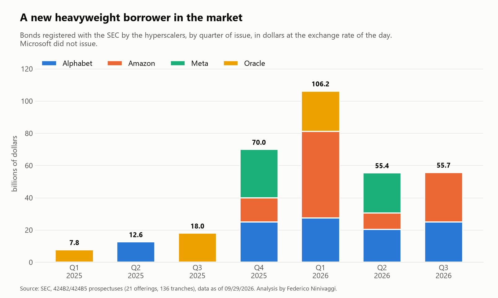
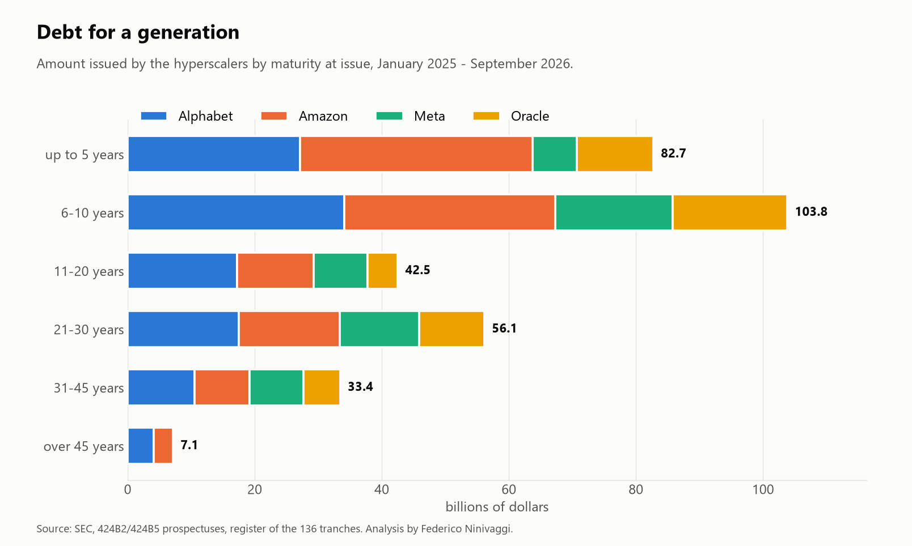
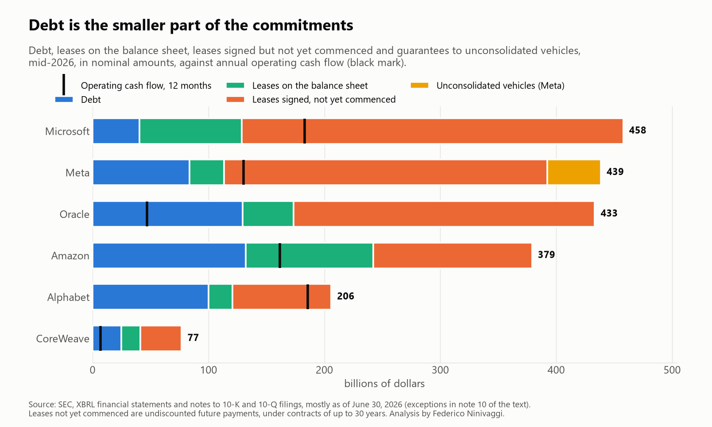
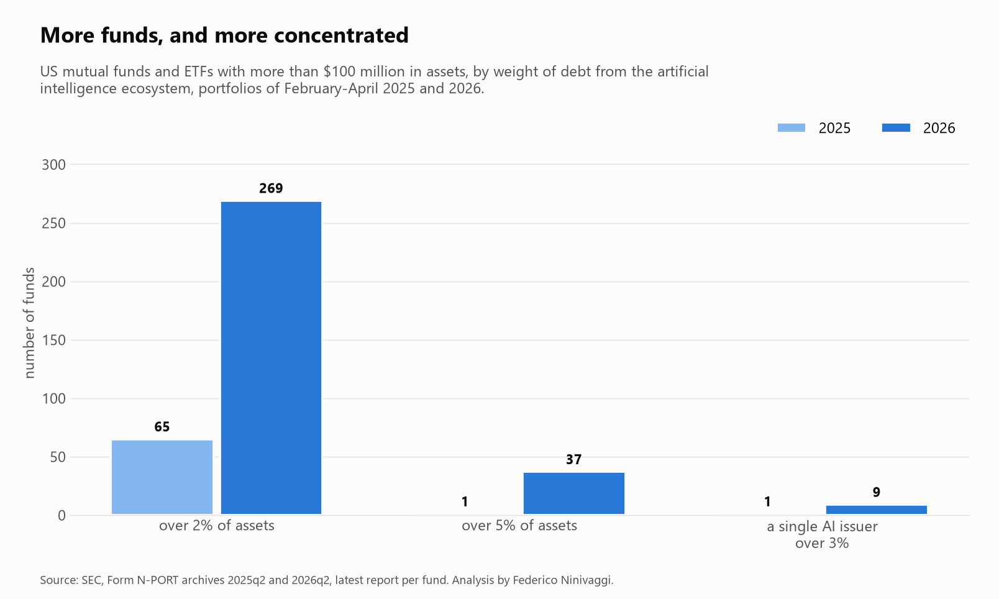

The markets’ new heavyweight borrower
Nº 04 · long read · Oct 6, 2026
The markets’ new heavyweight borrower
In twenty-one months Alphabet, Amazon, Meta and Oracle placed 325.7 billion dollars of bonds, with maturities worthy of government debt.
Artificial intelligenceMarkets and credit
↩ back to Long read
Between March and June 2026 Microsoft added 133 billion dollars to an item that does not appear on its balance sheet. The item collects the rents, mostly for data centers, that the group has committed to pay under contracts already signed but not yet commenced: 196.6 billion dollars at the end of March, 329.1 billion dollars at the end of June. Over the same period Microsoft did not register a single bond issue with the US securities regulator, as it has not since January 2025. Microsoft’s case is the extreme one of a trend that has been reshaping the credit market for almost two years. The groups building the infrastructure of artificial intelligence commit to paying huge sums in two forms: bonds, which are debt and appear on the balance sheet, and leases already signed, which the balance sheet does not show and which appear only in the notes.1
1 Microsoft, 10-Q as of March 31, 2026 and 10-K as of June 30, 2026, note on leases: “additional leases, primarily for datacenters, that had not yet commenced”. No final bond prospectus, 424B2 or 424B5, filed by Microsoft since January 1, 2025.
In the industry these groups are called hyperscalers: they run computing centers on a planetary scale and sell their capacity, and they are Amazon, Alphabet, Meta, Microsoft and, in the classification of the Financial Times, Oracle. Their debt is measured on the documents that companies must file with the Securities and Exchange Commission, the SEC, which supervises US markets, and on the portfolios that mutual funds disclose every quarter.
A new borrower
From January 2025 to September 2026 the four groups that finance themselves on the bond market filed 21 final bond prospectuses, for 136 securities and 325.7 billion dollars. Alphabet placed 110.5 billion dollars, Amazon 109.5 billion, Meta 55.0 billion and Oracle 50.8 billion. In the first nine months of 2026 the total placed reached 217.4 billion dollars, 2.0 times that of the whole of 2025.2
2 SEC, 424B2 and 424B5 final prospectuses and term sheets, 82 documents downloaded on September 29, 2026; amounts in dollars at the exchange rate of the issue date. In all 21 offerings the amount underwritten by the banks matches the stated total. The register is a lower bound: it excludes issues placed outside the SEC perimeter and the data center vehicles.

The debt is no longer denominated in dollars alone. Almost a quarter of the amount issued, 23.2 percent, is denominated in other currencies: 42.4 billion dollars in euros, 16.3 billion in Canadian dollars, 13.2 billion in sterling and 3.6 billion in yen. In May 2026 Alphabet placed 576.5 billion yen in seven securities, the last maturing in 2066. The choice of five currencies suggests an issuer looking for buyers in every market.3
3 Register of tranches from SEC prospectuses; values in dollars at the exchange rate of the day. Total denominated in dollars: 250.2 billion dollars.
4 January-August 2026: 157 billion dollars issued in dollars by the hyperscalers, 212 billion in all currencies, equal to 10 percent of the increase in marketable Treasury debt, Monthly Statement of the Public Debt. F. Ninivaggi, “Il conto della guerra arriva sui titoli di Stato”, LinkedIn, October 2026, in Italian.
The amounts remain small next to government bonds. Between January and August 2026 the hyperscalers’ dollar issues weighed about a tenth of the debt added by the US Treasury, and their calendar does not follow that of government bond yields: the rise in Treasury yields in 2026 has mostly different causes, as an earlier analysis showed. The novelty is in the corporate credit market.4
Debt for a generation
The average maturity of the 136 securities, weighted by amount, is 16.6 years. 29.3 percent of the amount issued matures in thirty years or more, 10.6 percent in forty years or more. Alphabet and Amazon placed fifty-year securities, and in February 2026 Alphabet issued in sterling a security that matures in 2126. On the fixed-coupon securities alone the four groups pay about 15.9 billion dollars of interest every year.5
5 Maturity at the issue date, weighted by amount. Alphabet sterling bond with a 6.125 percent coupon maturing in 2126, 424B2 prospectus filed on February 12, 2026.

The cost of those maturities has grown. On its forty-year bond Meta paid a coupon of 5.75 percent in October 2025 and 6.45 percent in April 2026, and Alphabet went from 5.30 percent in April 2025 to 6.50 percent in August 2026. Meta’s balance sheet at June 30, 2026 shows the weight of long maturities: on bonds outstanding of 84.00 billion dollars, the interest still to be paid until maturity amounts to 89.38 billion dollars, more than the principal itself.6
6 Coupons from the prospectuses; pricing dates October 30, 2025 and April 30, 2026. Meta, 10-Q as of June 30, 2026: “$84.00 billion aggregate principal amount of Notes outstanding”, future interest of 4.40 billion dollars within twelve months and 84.98 billion beyond.
The price of risk
The cost of a corporate bond is measured by its spread, that is the extra yield over the US Treasury of the same maturity, expressed in basis points: 85 basis points correspond to 0.85 percent a year. Rating classes should order spreads, so that an AA issuer pays less than an A issuer. In April 2025 Alphabet, rated AA+, placed its ten-year bond at 47 basis points over the Treasury. In August 2026 it paid 85 basis points, 38 basis points more. On the same two dates the average spread of AA bonds stood still at 57 basis points, and that of A bonds fell from 86 to 65 basis points. While the market asked less of A-class borrowers, it asked more of a borrower rated AA+: in August 2026 Alphabet placed above the average of the class below.7
7 Spreads stated in Alphabet’s term sheets, FWP, with trade dates of April 28, 2025 and August 6, 2026, “Spread to Benchmark Treasury”, the second filed on August 7, with the ratings stated in the same sheets. ICE BofA indexes of US AA and A bonds, from FRED, same day; the values of August 6 and 7, 2026 coincide. On the forty-year bond Alphabet’s spread rose by 60 basis points. A index: 86 basis points on April 28, 2025, 65 basis points on August 6, 2026. The spread at placement contains the premium needed to place a large offering in a single day, which the index of bonds already outstanding does not have: the overtaking of the A-class average should be read with this caution, while changes over time are comparable.
8 Event study on 12 dollar issues; average change on the other days of the same period -0.2 basis points; the widening exceeds 99.9 percent of the averages obtained by randomly drawing twelve days without issues, 10,000 draws. Excluding the windows that straddle the month-end index rebalancing: +2.9 basis points, 99.4th percentile. AAA index: +2.8 basis points, with an increase in 92 percent of the events. The AA index includes, according to FRED, “all securities with a given investment grade rating AA”; the presence of Alphabet bonds is inferred from the AA+ rating in the term sheets, note 7, not verified on the composition of the index.
The large issues also seem to move the rest of the market. Between the day before the pricing of the 12 most significant dollar issues and the third day after, the average spread of AA bonds widens on average by 2.6 basis points, against an almost zero change on the other days of the same period. The AA index, however, collects bonds rated AA, and Alphabet is rated AA+, so its widening may include the repricing of Alphabet bonds already outstanding. The index of the class above, AAA, which includes no bonds rated AA, widens by 2.8 basis points around the same events. The widening of the AA index recurs in 83 percent of the events and affects all rating classes alike. With twelve events, many of which fall a few days after quarterly results, the effect of supply cannot be fully separated from that of news on investment.8
The commitments off the balance sheet
A company’s leverage is usually measured by the ratio of debt to the cash its business generates. For the hyperscalers this measure captures a minority of their commitments. US accounting standards require leases in progress to be recognized on the balance sheet, while leases signed but not yet commenced remain in the notes, and in this form the hyperscalers secure the data centers that others will build for them.9
9 Financial statements distinguish the recognized “lease liabilities” from the “leases that have not yet commenced”, reported in the notes.
10 SEC, XBRL data from financial statements and text of the notes to 10-K and 10-Q filings as of June 30, 2026, with some exceptions: for Oracle, debt and leases not yet commenced as of May 31, 2026, recognized leases as of August 31, 2026; for Meta, finance leases as of December 31, 2025; for CoreWeave, shown only in the figure, debt as of March 31, 2026. Leases not yet commenced: Microsoft 329.1 billion dollars, Meta 279.0 billion, Oracle 260.0 billion, Amazon 137.2 billion, Alphabet 85.2 billion. Microsoft: “with some arrangements subject to certain contractual conditions being met”. Purchase commitments are left out of the count, as they include items other than leases, such as energy contracts and licenses.
In mid-2026 the five groups report 485.9 billion dollars of financial debt and 292.6 billion dollars of leases on the balance sheet. Leases signed and not yet commenced amount to 1,090.5 billion dollars, 2.2 times financial debt. They are not debt in the strict sense: they are future payments, not discounted, under contracts that last up to thirty years, and some of Microsoft’s contracts depend on conditions still to be met. They do, however, give the order of magnitude of fixed commitments that in some cases grow faster than debt. Between March and June 2026 Microsoft’s item grew by more than Meta raised with all the bonds it has issued since 2025, and Meta’s item grew in six months, from December 2025 to June 2026, from 103.77 to 278.99 billion dollars.10

Meta also uses a third form. In October 2025 it set up with a fund of the Blue Owl group a joint company to build a data center campus in Louisiana. It owns 20 percent of the company and does not consolidate it. The partner financed its share by privately placing 27.3 billion dollars of secured bonds, which do not appear on Meta’s balance sheet. Meta’s maximum exposure to loss, given in the notes to its accounts, is 46.03 billion dollars, 55 percent of the financial debt it recognizes.11
11 Meta, 2025 10-K, note 5, and 10-Q as of June 30, 2026: “our maximum exposure to loss related to the Venture was $46.03 billion”. Blue Owl Real Estate Net Lease Trust, 10-Q as of September 30, 2025, note 18: “Beignet Investor issued $27,293,849 in senior secured notes with an interest rate of 6.581% and a maturity date of May 30, 2049”, amounts in thousands of dollars. In the N-PORT 2026q2 archives the security appears as “BEIGNET INVESTOR LLC 144A 6.581000% 05/30/2049”, CUSIP 076912AA2: Rule 144A restricts the placement to institutional investors, outside registered prospectuses.
12 SEC, XBRL data, twelve months to June 30, 2026, August 31, 2026 for Oracle. Free cash flow computed as operating cash flow minus gross investment in plant: Amazon -11.6 billion dollars, Oracle -28.7 billion. Amazon instead subtracts investment net of sales and incentives and reports a different figure: “Free cash flow decreased to an outflow of $7.6 billion for the trailing twelve months”, 8-K of July 30, 2026, exhibit 99.1. Oracle, 10-K as of May 31, 2026: “Remaining performance obligations were $638 billion and $138 billion as of May 31, 2026 and 2025, respectively”. “Years of cash” are a measure of scale, not a repayment plan.
Against these commitments, the operating cash flow of the five groups was 707.3 billion dollars over the last twelve months, and investment in plant absorbs 82.9 percent of that cash. Amazon invested 107 percent of its operating cash flow and Oracle 161 percent, and both closed the last twelve months with negative free cash flow. Oracle’s profile is the most stretched: debt and leases, recognized or still to commence, are worth 9.2 years of its operating cash flow, even though the group reports 638 billion dollars of customer contracts already signed and not yet performed.12
Who buys the debt
US mutual funds and ETFs file with the SEC the full list of their holdings every quarter. In the portfolios of February-April 2026 the debt of the artificial intelligence ecosystem, that is the debt of the hyperscalers and of the companies that build or run computing capacity for them, was worth 80.2 billion dollars, against 30.8 billion dollars a year earlier: 2.6 times as much. Oracle is the most widely held borrower, present in 1,190 funds that hold 21.0 percent of its financial debt.13
13 SEC, Form N-PORT archives 2025q2 and 2026q2, latest report per fund, portfolios mostly of February-March. Ecosystem: hyperscalers, Meta’s vehicle, CoreWeave and other computing companies, data center securitizations, SoftBank, Nvidia. Oracle debt as of May 31, 2026. N-PORT describes only registered US funds: insurers, pension funds, banks and foreign investors are left out.
14 N-PORT 2026q2, aggregation by fund family. The index fund mechanism is an inference about how such funds work, not a measured fact.
Four fund families, Vanguard, BlackRock, Capital Group and PIMCO, hold 60.1 percent of the ecosystem’s debt held by US funds. The first two manage mostly index funds, which do not select securities but buy them in proportion to the amount outstanding. The more the hyperscalers issue, the more their debt enters the portfolios of those who have chosen to replicate the whole bond market, and issuers would thus find a buyer that, by construction, does not negotiate on price.14
Concentration has also grown. In the 2025 portfolios a single US fund with more than 100 million dollars in assets had over 5 percent of its assets in this debt, and in the 2026 portfolios the funds above that threshold number 37. Funds above 2 percent of assets went from 65 to 269. US funds hold 36 percent of the value of the bonds of Meta’s vehicle, and only 19.0 percent of that value is held by funds that also own Meta bonds. Those who hold both have an exposure to the group larger than the one they read under the heading “Meta”.15
15 Funds with more than 100 million dollars in assets. Beignet Investor bonds in funds: 9.7 billion dollars in 317 funds, of which 6.9 billion at PIMCO.

The labs downstream
The leases signed by the hyperscalers are paid back by the computing contracts that others sign with them, and among the largest of these customers are two unlisted companies, Anthropic and OpenAI, which do not file financial statements with the SEC. The effects appear in the accounts of those who finance them. In the second quarter of 2026 Amazon recorded 53.4 billion dollars of non-operating income, “primarily from our investments in Anthropic”, about two thirds of its pre-tax income for the quarter. The revaluation of Anthropic’s preferred shares alone, 50.5 billion dollars, is worth 1.8 times the quarter’s operating income. The ability of these labs to raise the money with which they pay for computing capacity, and therefore the leases on which data center construction rests, depends largely on their valuation.16
16 Amazon, 8-K of July 30, 2026, exhibit 99.1: “non-operating pre-tax other income of $53.4 billion, primarily from our investments in Anthropic”; 10-Q as of June 30, 2026: “upward adjustments of approximately $50.5 billion in Q2 2026”, “primarily from our nonvoting preferred stock in Anthropic”. Operating income for the quarter 27.5 billion dollars, pre-tax income 80.9 billion.
The comparison with the railways
A recurring comparison is with the building of the railways in the nineteenth century. In 1847, at the peak of the British Railway Mania, railway investment absorbed 7.3 percent of British gross domestic product, while the 745 billion dollars of investment announced for 2026 by Alphabet, Amazon, Meta and Microsoft is worth 2.4 percent of 2025 US gross domestic product. For credit, the difference that matters concerns financing. The acts of Parliament that authorized the British companies usually allowed borrowing of up to a third of share capital, and when the bubble burst the losses fell on shareholders, while almost no line went bankrupt. The American railways were built mainly with debt, in a corporate bond market then made up mostly of railroad, canal and mining securities: over 1873-1875 the annual default rates of that market added up to 35.9 percent of its par value.17
17 A. Odlyzko, “Collective hallucinations and inefficient markets: The British Railway Mania of the 1840s”, University of Minnesota, 2010, p. 34, 7.3 percent of GDP in 1847; note 94, the one-third limit, paraphrased: “The usual provisions allowed railways to raise up to one third of their equity capital in loans”; p. 25, “hardly any of the lines went bankrupt”. K. Giesecke, F. A. Longstaff, S. Schaefer and I. Strebulaev, “Corporate bond default risk: A 150-year perspective”, NBER Working Paper 15848, 2010, p. 8, “Railroads were built mainly with borrowed money”, and table 3; p. 1: “the corporate bond market of the 1860s was composed primarily of railroad, canal, and mining issues”. Announced investment: Financial Times, September 28, 2026; 2025 US GDP from the BEA, through FRED, in the version downloaded for the analysis; the series available on October 6, 2026 raises it by 0.3 percent and leaves the ratio at 2.4 percent.
The two models now coexist. On financial debt alone, modest relative to the operating cash flow they generate, the large groups other than Oracle resemble the British companies. Counting the leases already signed, the resemblance fades. The American model resurfaces at the margins, in the vehicles that build data centers with debt and in the computing companies, tied to the large groups by long-term leases. Anyone who wished to measure these commitments could look, beyond bond issuance, at the line in the notes to the accounts that collects leases not yet commenced, where commitments grew faster than debt between December 2025 and June 2026 for Meta, and in the second quarter of 2026 alone for Microsoft.
Analysis of prospectuses, financial statements and fund portfolios filed with the Securities and Exchange Commission, and of Federal Reserve data. Data as of September 29, 2026. The code and checks of the analysis are available on request.
English version of the article published in Italian on LinkedIn on 6 October 2026: the Italian version on this site and the original on LinkedIn.
Federico Ninivaggi · October 6, 2026